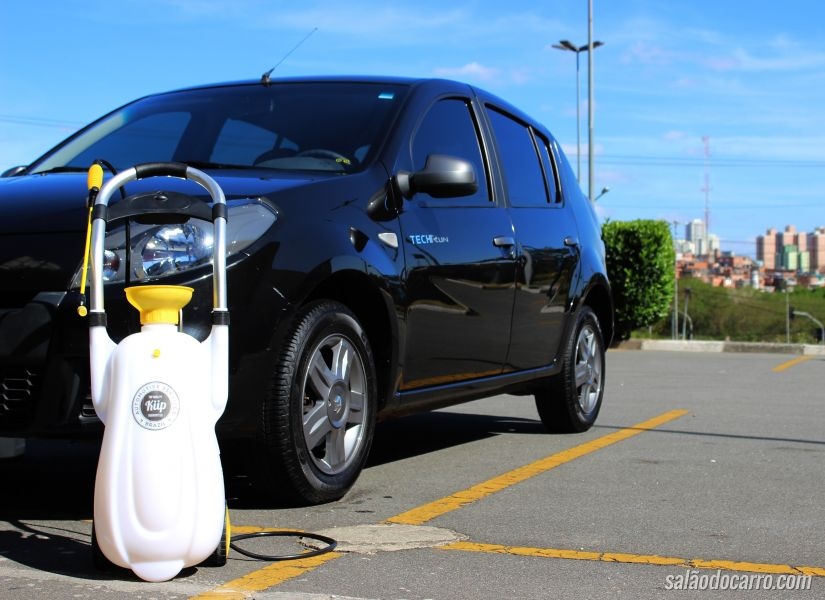

Lavagem Ecológica:
A lavagem ecológica, que também é conhecida por ecolavagem ou biolavagem, é um tipo de lavagem de carros que quase não utiliza água em seu processo.
Quase sem utilização de água
A lavagem ecológica, que também é conhecida por ecolavagem ou biolavagem, é um tipo de lavagem de carros que quase não utiliza água em seu processo, sendo considerada perfeita para estes tempos atuais, onde há falta de água em algumas regiões do país. Ela é feita com a ajuda de produtos biodegradáveis que são passados na carroceria do veículo com o auxílio de uma esponja ou de algum tipo de flanela específica, resultando em brilho e em limpeza sem gastar tanta água como a lavagem convencional.
A diferença na ponta do lápis
Uma das justificativas que realmente está fazendo toda a diferença para que muitas pessoas comecem a fazer uso de lavagem ecológica em diversas regiões do país, especialmente em São Paulo, tem a ver com a economia de água proporcionada. A diferença na ponta do lápis é totalmente favorável à lavagem ecológica, já que a lavagem convencional costuma gastar em média, nada menos do que 80 litros de água, enquanto que a lavagem ecológica gasta apenas 200 ml! Esta diferença pode realmente ajudar em muito na hora de fazer economia de água, portanto, tem sido decisiva para que cada vez mais pessoas procurem pela lavagem ecológica para manter seus carros limpos normalmente.
O preço da economia em R$ Se a lavagem ecológica representa uma boa forma de economizar água e de ajudar o meio ambiente, ela também pode ser uma boa opção pelo fato de ser um tipo de lavagem extremamente econômica no que diz respeito ao dinheiro. Um kit de lavagem ecológica é vendido pelo preço médio de R$ 90, sendo que este kit permite que até 200 lavagens sejam realizadas por ele, fazendo com que cada lavagem custe apenas R$ 0,45. Com isto, acrescido o copo de 200 ml de água necessário para que a lavagem ecológica seja feita, fica fácil entender porque é muito mais inteligente usar este tipo de lavagem para manter o carro limpo nestes tempos de crise de falta d’água.